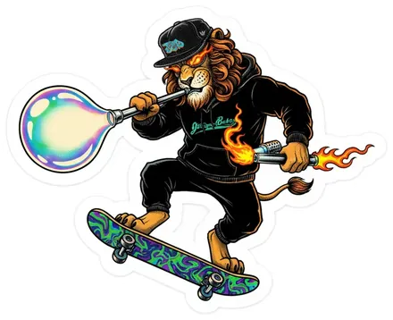

Torch
The lion on the torch The perfectionist with a short fuse
From Eugene, Oregon
Voice Short sentences. Dry. Never explains twice. Says 'hand made' like a threat. Never says 'awesome'.
Loves A clean gather, the smell of fumed silver, people who show up on time
Hates Molds, shortcuts, anyone touching the bench
Friends Big Stitch, Dr. Squint Beef Chomps, Crude